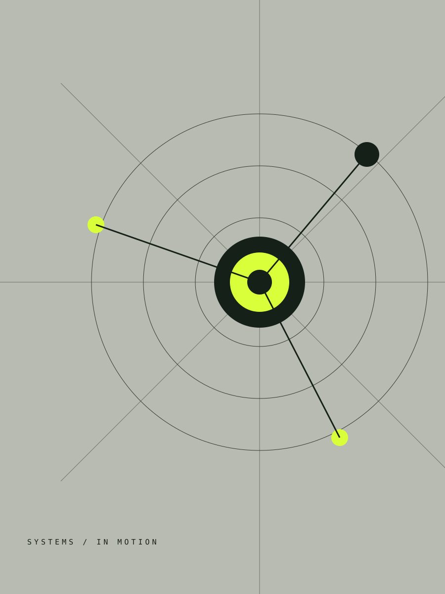

Technology
strategy
Shape a technology vision, roadmap, and operating model.
↗Independent technology advisory
We help ambitious organisations make sharper technology decisions, design useful digital products, and turn complexity into forward motion.
Start a consultation ↗
Clarity
in motion
01 / A better way forward
Our senior consultants work beside your team, not above it. Together, we find the decisions that create real leverage—and turn them into practical action.
See our approach →02 / Capabilities